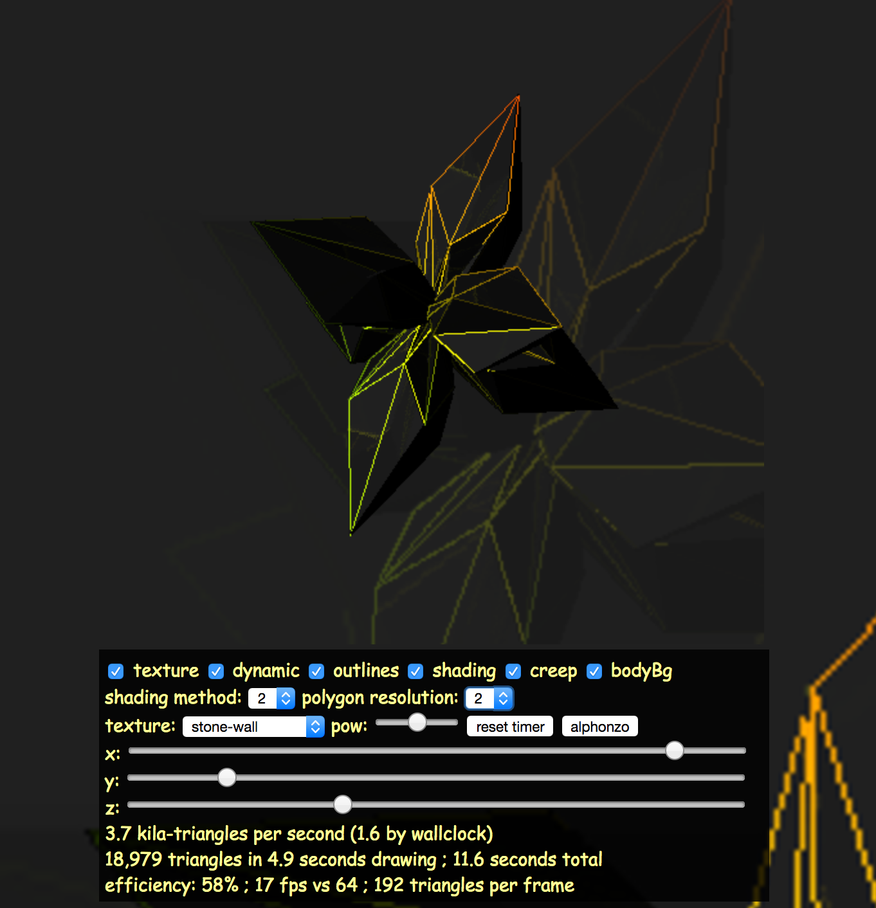
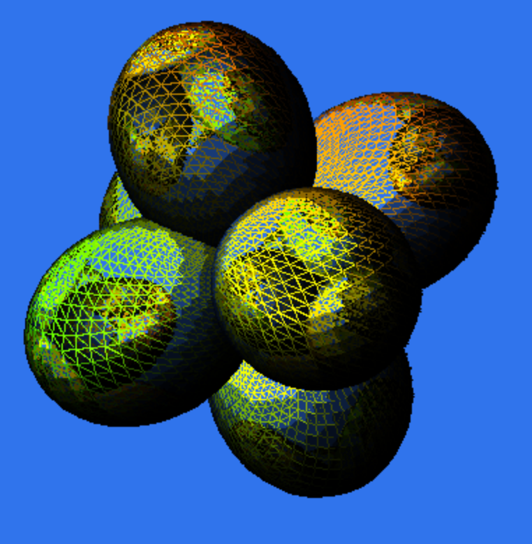
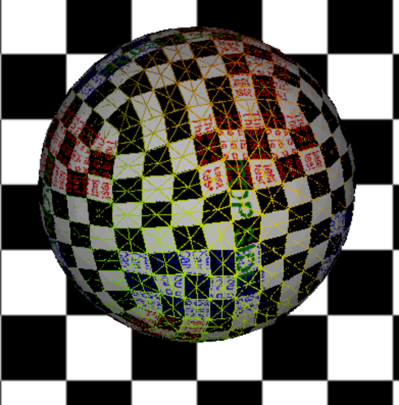

i-can-haz-js3 is a small scale software-only 3d engine based on a six dimensional Bresenham implementation from proyectosroboticos The dimensions are the typical xyz + texture space.
The code style is quirky and based on an older style I've long abandoned. Nonetheless, perhaps it is somewhat interesting.
BxoTest demonstrates shading, texturing, and rotation. A rotating objects shifts from a cube to a spheroid and back again. Tons of crazy controls.
 
SkyboxTest demonstrates a sphere rendered at different level of detail (LOD). More polygons are used when the object occupies more screen real estate and fewer when it is smaller.
